Aufwärmen – warum der Körper Anlauf braucht – Lesespurgeschichte mit Rätselaufgaben (Klasse 3)
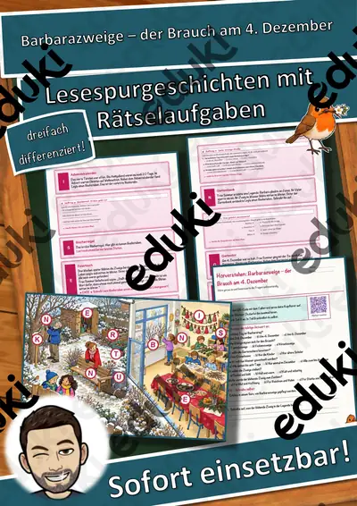
Barbarazweige – der Brauch am 4. Dezember – Lesespurgeschichte mit Rätselaufgaben (Klasse 3)

Das Drachenfest – Lesespurgeschichte mit Rätselaufgaben (Klasse 3)

Das Eis am Dach – Lesespurgeschichte mit Rätselaufgaben (Klasse 3)

Das Iglu – Lesespurgeschichte mit Rätselaufgaben (Klasse 3)
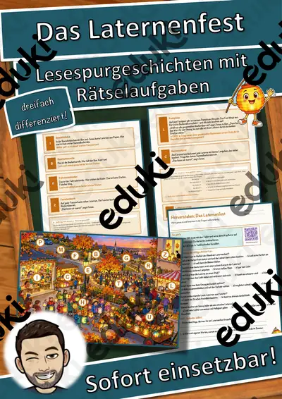
Das Laternenfest – Lesespurgeschichte mit Rätselaufgaben (Klasse 3)
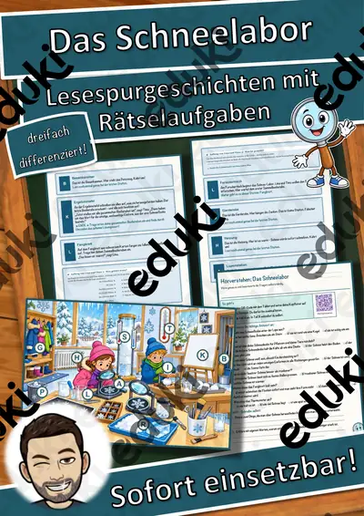
Das Schneelabor – Lesespurgeschichte mit Rätselaufgaben (Klasse 3)

Das Schwimmbad – Lesespurgeschichte mit Rätselaufgaben (Klasse 3)
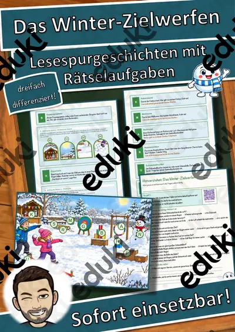
Das Winter-Zielwerfen – Lesespurgeschichte mit Rätselaufgaben (Klasse 3)
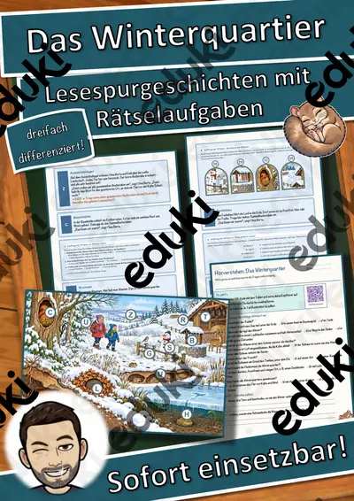
Das Winterquartier – Lesespurgeschichte mit Rätselaufgaben (Klasse 3)
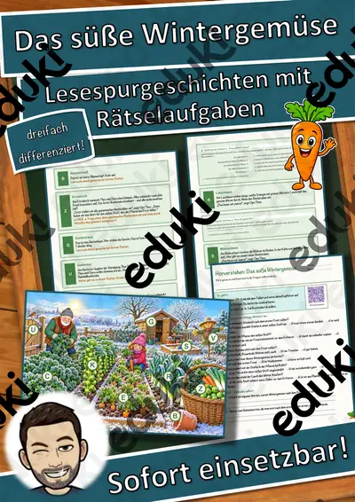
Das süße Wintergemüse – Lesespurgeschichte mit Rätselaufgaben (Klasse 3)

Datendetektive – Daten sammeln, zählen, darstellen – Lesespurgeschichte mit Rätselaufgaben (Klasse 3)

Der Ahornweg – Lesespurgeschichte mit Rätselaufgaben (Klasse 3)

Der Apfelkeller – Lesespurgeschichte mit Rätselaufgaben (Klasse 3)
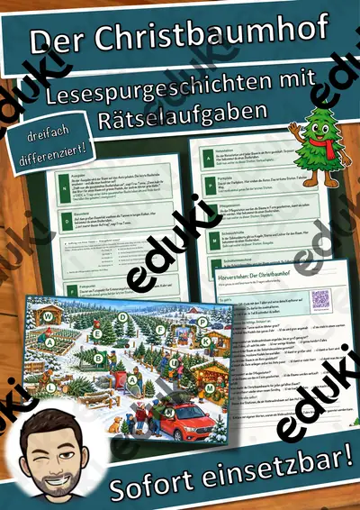
Der Christbaumhof – Lesespurgeschichte mit Rätselaufgaben (Klasse 3)

Der Eisbrecher – Lesespurgeschichte mit Rätselaufgaben (Klasse 3)

Der Eisstock – Lesespurgeschichte mit Rätselaufgaben (Klasse 3)
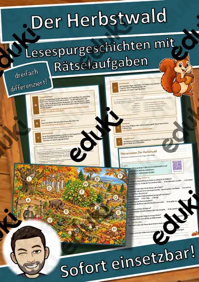
Der Herbstwald – Lesespurgeschichte mit Rätselaufgaben (Klasse 3)

Der Kanon – eine Melodie, viele Stimmen – Lesespurgeschichte mit Rätselaufgaben (Klasse 3)
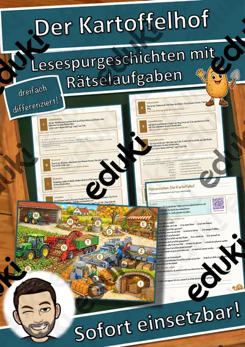
Der Kartoffelhof – Lesespurgeschichte mit Rätselaufgaben (Klasse 3)
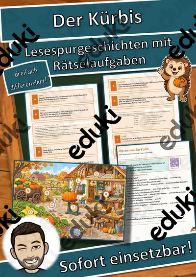
Der Kürbis – Lesespurgeschichte mit Rätselaufgaben (Klasse 3)
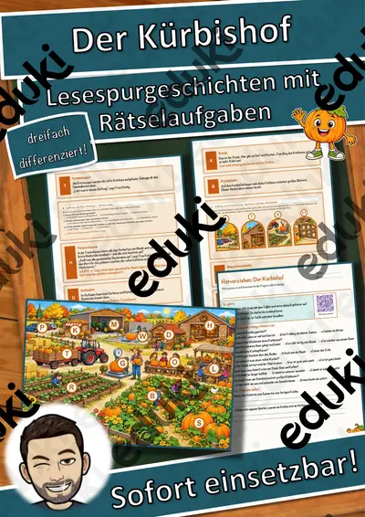
Der Kürbishof – Lesespurgeschichte mit Rätselaufgaben (Klasse 3)

Der Reiterhof – Lesespurgeschichte mit Rätselaufgaben (Klasse 3)

Der Saugroboter – Sensoren und Hindernisse – Lesespurgeschichte mit Rätselaufgaben (Klasse 3)

Der Schulbus – Lesespurgeschichte mit Rätselaufgaben (Klasse 3)

Der Schulgarten – Lesespurgeschichte mit Rätselaufgaben (Klasse 3)

Der Waldboden – Lesespurgeschichte mit Rätselaufgaben (Klasse 3)

Der Wertstoffhof – Lesespurgeschichte mit Rätselaufgaben (Klasse 3)
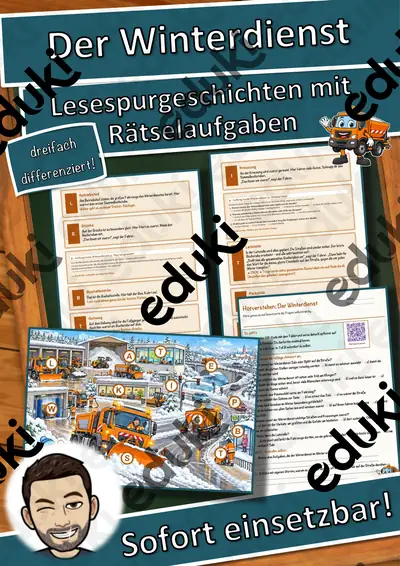
Der Winterdienst – Lesespurgeschichte mit Rätselaufgaben (Klasse 3)
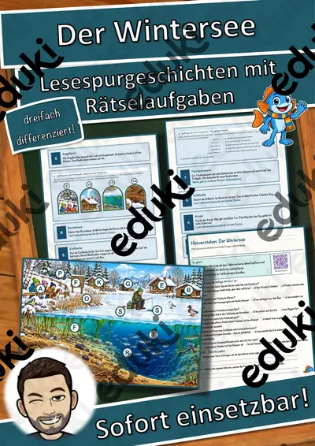
Der Wintersee – Lesespurgeschichte mit Rätselaufgaben (Klasse 3)
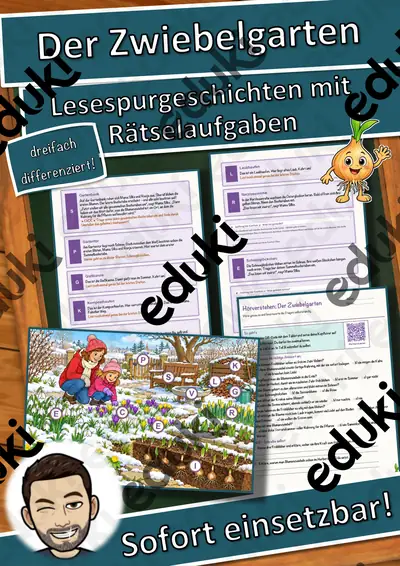
Der Zwiebelgarten – Lesespurgeschichte mit Rätselaufgaben (Klasse 3)

Der dunkle Schulweg – Lesespurgeschichte mit Rätselaufgaben (Klasse 3)
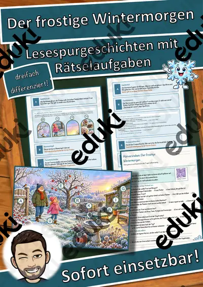
Der frostige Wintermorgen – Lesespurgeschichte mit Rätselaufgaben (Klasse 3)
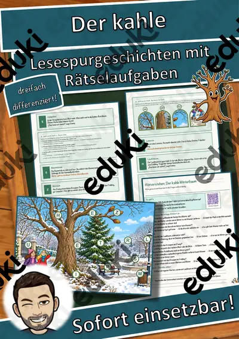
Der kahle Winterbaum – Lesespurgeschichte mit Rätselaufgaben (Klasse 3)
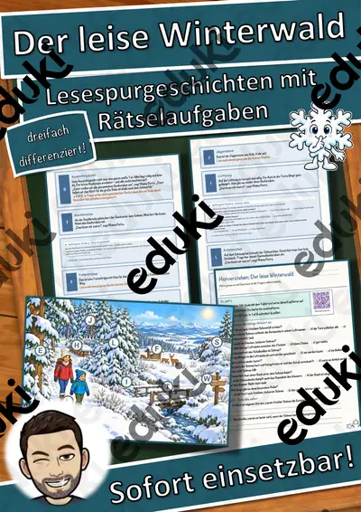
Der leise Winterwald – Lesespurgeschichte mit Rätselaufgaben (Klasse 3)

Der sichtbare Atem – Lesespurgeschichte mit Rätselaufgaben (Klasse 3)

Die Baustelle – Lesespurgeschichte mit Rätselaufgaben (Klasse 3)

Die Blaskapelle – Musik im Freien – Lesespurgeschichte mit Rätselaufgaben (Klasse 3)

Die Bundesjugendspiele – laufen, springen, werfen – Lesespurgeschichte mit Rätselaufgaben (Klasse 3)

Die Feuerwache – Lesespurgeschichte mit Rätselaufgaben (Klasse 3)

Die Gleichnisse Jesu – verlorenes Schaf, barmherziger Samariter – Lesespurgeschichte mit Rätselaufgaben (Klasse 3)

Die Huskyfarm – Lesespurgeschichte mit Rätselaufgaben (Klasse 3)
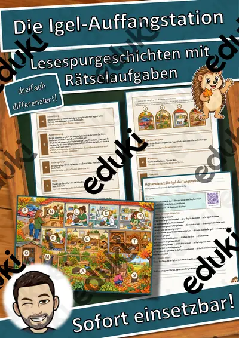
Die Igel-Auffangstation – Lesespurgeschichte mit Rätselaufgaben (Klasse 3)
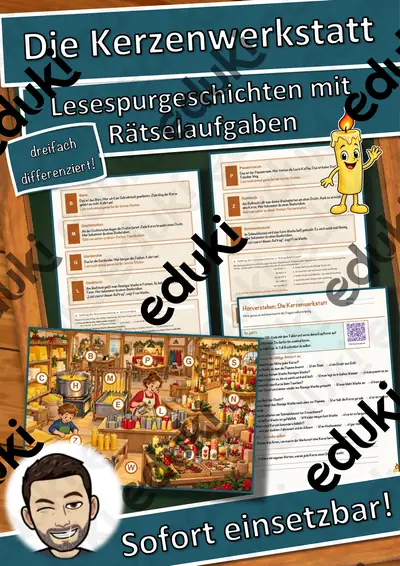
Die Kerzenwerkstatt – Lesespurgeschichte mit Rätselaufgaben (Klasse 3)

Die Lebkuchenbäckerei – Lesespurgeschichte mit Rätselaufgaben (Klasse 3)

Die Nebelwiese – Lesespurgeschichte mit Rätselaufgaben (Klasse 3)

Die Polarstation – Lesespurgeschichte mit Rätselaufgaben (Klasse 3)

Die Rodelbahn – Lesespurgeschichte mit Rätselaufgaben (Klasse 3)
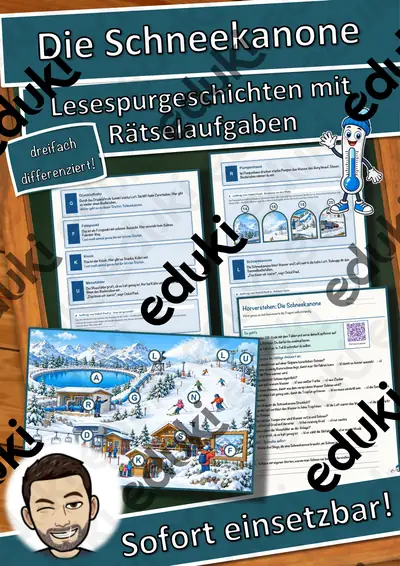
Die Schneekanone – Lesespurgeschichte mit Rätselaufgaben (Klasse 3)
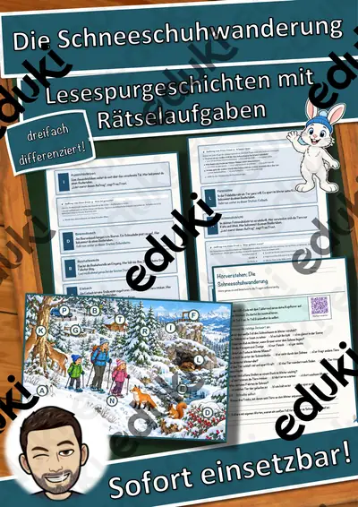
Die Schneeschuhwanderung – Lesespurgeschichte mit Rätselaufgaben (Klasse 3)
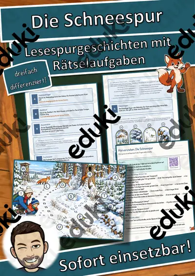
Die Schneespur – Lesespurgeschichte mit Rätselaufgaben (Klasse 3)

Die Sprungschanze – Lesespurgeschichte mit Rätselaufgaben (Klasse 3)
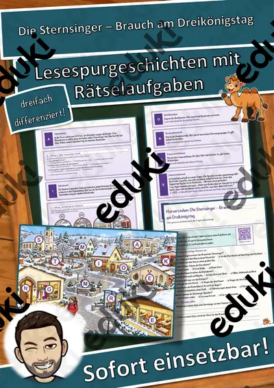
Die Sternsinger – Brauch am Dreikönigstag – Lesespurgeschichte mit Rätselaufgaben (Klasse 3)

Die Streuobstwiese – Lesespurgeschichte mit Rätselaufgaben (Klasse 3)

Die Uhr wird umgestellt – Uhrzeiten lesen und Zeitspannen rechnen – Lesespurgeschichte mit Rätselaufgaben (Klasse 3)

Die Vogelhochzeit – ein sorbischer Brauch im Januar – Lesespurgeschichte mit Rätselaufgaben (Klasse 3)

Die Vogelscheuche – Lesespurgeschichte mit Rätselaufgaben (Klasse 3)

Die Vogelzählung – Lesespurgeschichte mit Rätselaufgaben (Klasse 3)
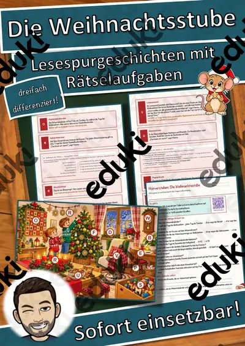
Die Weihnachtsstube – Lesespurgeschichte mit Rätselaufgaben (Klasse 3)
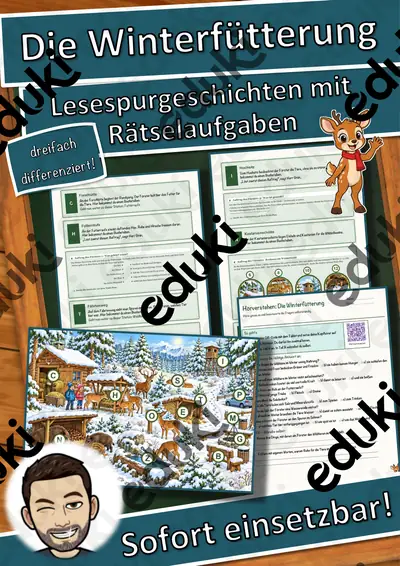
Die Winterfütterung – Lesespurgeschichte mit Rätselaufgaben (Klasse 3)
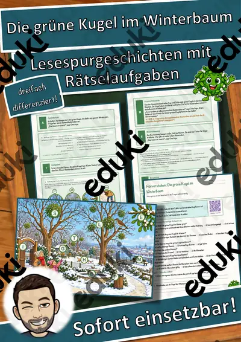
Die grüne Kugel im Winterbaum – Lesespurgeschichte mit Rätselaufgaben (Klasse 3)

Die lange Kulturnacht – was macht Kultur wertvoll? – Lesespurgeschichte mit Rätselaufgaben (Klasse 3)

Ehrlich sein – Lesespurgeschichte mit Rätselaufgaben (Klasse 3)
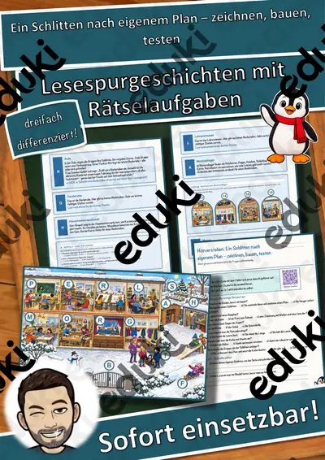
Ein Schlitten nach eigenem Plan – zeichnen, bauen, testen – Lesespurgeschichte mit Rätselaufgaben (Klasse 3)

Ein Tag im Kunstmuseum – Lesespurgeschichte mit Rätselaufgaben (Klasse 3)

Filzen, Sticken und Knüpfen – Lesespurgeschichte mit Rätselaufgaben (Klasse 3)
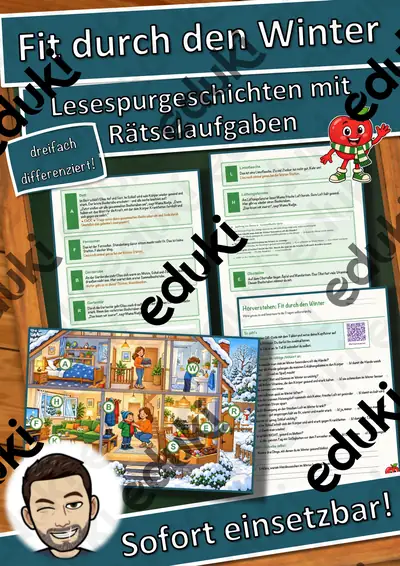
Fit durch den Winter – Lesespurgeschichte mit Rätselaufgaben (Klasse 3)

Frühlingsanfang – Tag und Nacht sind gleich lang – Lesespurgeschichte mit Rätselaufgaben (Klasse 3)

Fußball – Regeln, Positionen, Spielidee – Lesespurgeschichte mit Rätselaufgaben (Klasse 3)

Gefühle verstehen und zeigen – Lesespurgeschichte mit Rätselaufgaben (Klasse 3)

Geheimschriften – Nachrichten verschlüsseln und entschlüsseln – Lesespurgeschichte mit Rätselaufgaben (Klasse 3)
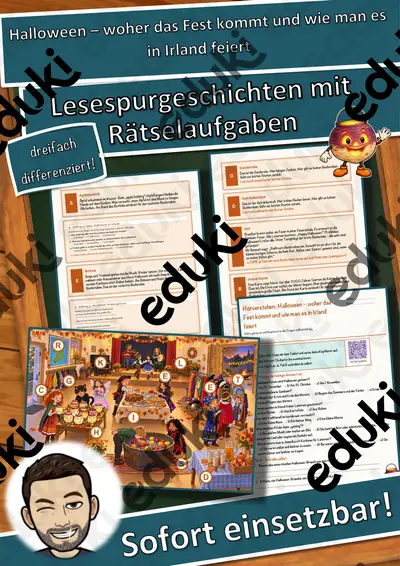
Halloween – woher das Fest kommt und wie man es in Irland feiert – Lesespurgeschichte mit Rätselaufgaben (Klasse 3)
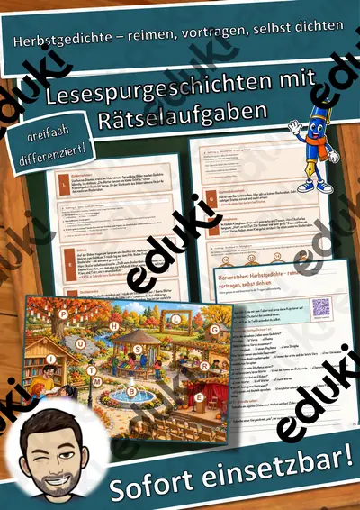
Herbstgedichte – reimen, vortragen, selbst dichten – Lesespurgeschichte mit Rätselaufgaben (Klasse 3)

Jonglieren – mit Tüchern, Bällen und Ringen – Lesespurgeschichte mit Rätselaufgaben (Klasse 3)

Kann ein Computer lernen? – KI für Kinder – Lesespurgeschichte mit Rätselaufgaben (Klasse 3)

Kinderrechte weltweit – jedes Kind zählt – Lesespurgeschichte mit Rätselaufgaben (Klasse 3)

Land Art – Kunst aus Naturmaterialien – Lesespurgeschichte mit Rätselaufgaben (Klasse 3)
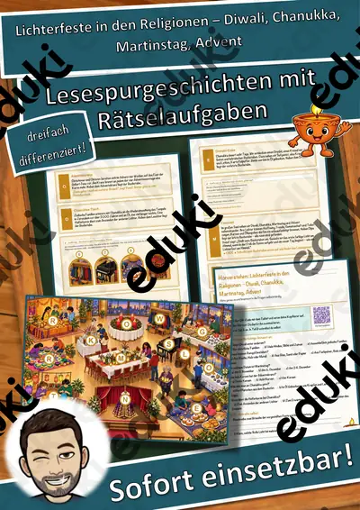
Lichterfeste in den Religionen – Diwali, Chanukka, Martinstag, Advent – Lesespurgeschichte mit Rätselaufgaben (Klasse 6)
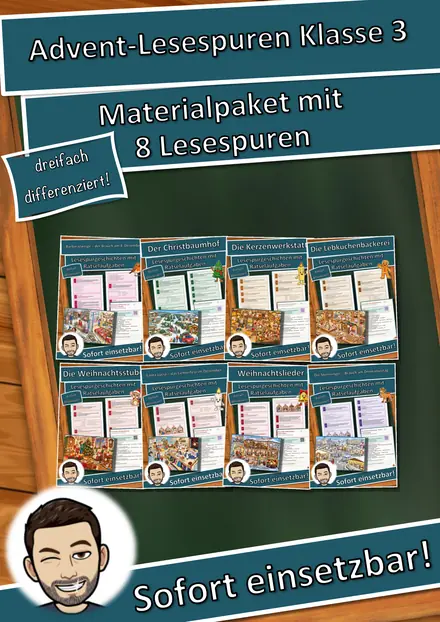
Materialpaket Advent und Weihnachten für die 3. Klasse: 8 Lesespurgeschichten mit Rätselaufgaben (Barbarazweige, Lebkuchen, Santa Lucia, Sternsinger & mehr)

Materialpaket Advent und Winter für die 6. Klasse: 7 Lesespurgeschichten mit Rätselaufgaben (Weihnachtsbasar, Saturnalien, Lichterfeste & mehr)

Materialpaket Herbst-Lesespuren für die 3. Klasse: 7 Lesespurgeschichten mit Rätselaufgaben (Kürbis, Igel, Laterne, Halloween & mehr)
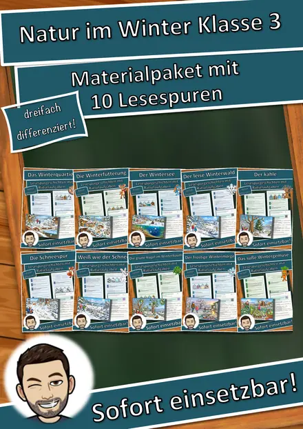
Materialpaket Natur im Winter für die 3. Klasse: 10 Lesespurgeschichten mit Rätselaufgaben (Wintertiere, Winterwald, Schneespuren & mehr)
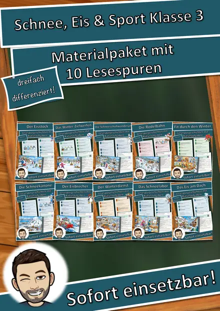
Materialpaket Schnee, Eis und Wintersport für die 3. Klasse: 10 Lesespurgeschichten mit Rätselaufgaben (Rodelbahn, Eisstock, Schneelabor & mehr)
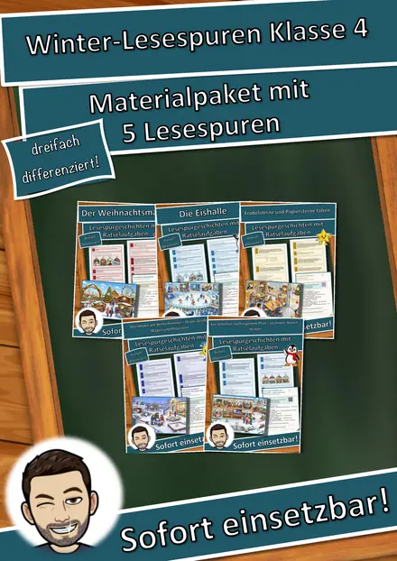
Materialpaket Winter und Advent für die 4. Klasse: 5 Lesespurgeschichten mit Rätselaufgaben (Weihnachtsmarkt, Fröbelsterne, Sternbilder & mehr)

Medien-Detektive unterwegs – Lesespurgeschichte mit Rätselaufgaben (Klasse 3)

Mein Traumhaus – Architektur für Kinder – Lesespurgeschichte mit Rätselaufgaben (Klasse 3)

Meine Daten – was ich im Netz für mich behalte – Lesespurgeschichte mit Rätselaufgaben (Klasse 3)

Morsen und Signale – Nachrichten codieren – Lesespurgeschichte mit Rätselaufgaben (Klasse 3)

Mosaik – Bilder aus Steinchen – Lesespurgeschichte mit Rätselaufgaben (Klasse 3)

Musik und Gefühle – wie Musik uns bewegt – Lesespurgeschichte mit Rätselaufgaben (Klasse 3)

Musikinstrumente der Welt – eine Reise durchs Museum – Lesespurgeschichte mit Rätselaufgaben (Klasse 3)

Notenschrift – wie Musik aufgeschrieben wird – Lesespurgeschichte mit Rätselaufgaben (Klasse 3)

Paul Klee – mit Linien spazieren gehen – Lesespurgeschichte mit Rätselaufgaben (Klasse 3)
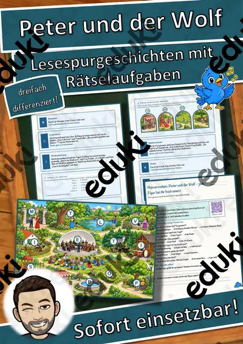
Peter und der Wolf – jede Figur hat ihr Instrument – Lesespurgeschichte mit Rätselaufgaben (Klasse 3)

Pixelbilder – wie der Computer Bilder speichert – Lesespurgeschichte mit Rätselaufgaben (Klasse 3)
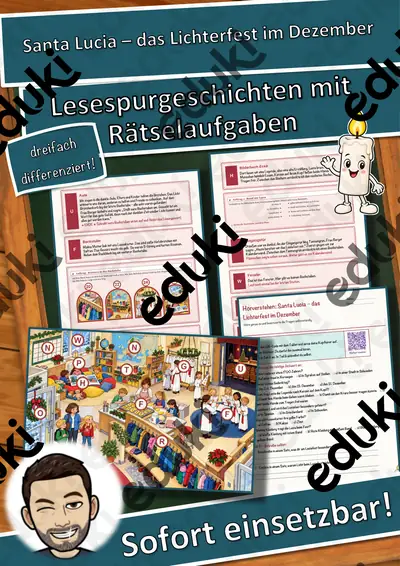
Santa Lucia – das Lichterfest im Dezember – Lesespurgeschichte mit Rätselaufgaben (Klasse 3)

Scherenschnitt und Silhouetten – Lesespurgeschichte mit Rätselaufgaben (Klasse 3)

Sichere Passwörter – mein digitaler Schlüssel – Lesespurgeschichte mit Rätselaufgaben (Klasse 3)

Spiele aus aller Welt – hüpfen, werfen, fangen wie anderswo – Lesespurgeschichte mit Rätselaufgaben (Klasse 3)

Spielregeln erfinden – eigene Spiele ausdenken, testen, verbessern – Lesespurgeschichte mit Rätselaufgaben (Klasse 3)

Sprinten und Starten – schnell wie der Wind – Lesespurgeschichte mit Rätselaufgaben (Klasse 3)

Streit schlichten – wir finden eine Lösung – Lesespurgeschichte mit Rätselaufgaben (Klasse 3)

Stricken mit der Strickliesel – Schnüre für kleine Geschenke – Lesespurgeschichte mit Rätselaufgaben (Klasse 3)

Takt und Rhythmus – Lesespurgeschichte mit Rätselaufgaben (Klasse 3)

Taschengeld – mein Geld klug einteilen – Lesespurgeschichte mit Rätselaufgaben (Klasse 3)

Teamgeist – gemeinsam ans Ziel – Lesespurgeschichte mit Rätselaufgaben (Klasse 3)

Volkstanz und Tanzfest – Tänze im Takt – Lesespurgeschichte mit Rätselaufgaben (Klasse 3)

Vorräte wie zu Omas Zeiten – Einkochen, Trocknen, Einlegen – Lesespurgeschichte mit Rätselaufgaben (Klasse 3)

Warme und kalte Farben – Lesespurgeschichte mit Rätselaufgaben (Klasse 3)

Warum Regeln wichtig sind – Lesespurgeschichte mit Rätselaufgaben (Klasse 3)

Warum die Tanne grün bleibt – Lesespurgeschichte mit Rätselaufgaben (Klasse 3)

Warum frieren die Tiere nicht? – Lesespurgeschichte mit Rätselaufgaben (Klasse 3)

Was macht einen guten Freund? – Lesespurgeschichte mit Rätselaufgaben (Klasse 3)

Weben am Webrahmen – Kette, Schuss und Muster – Lesespurgeschichte mit Rätselaufgaben (Klasse 3)
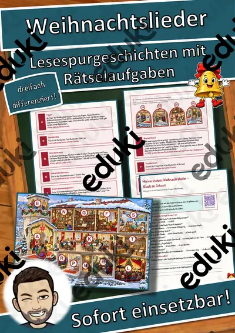
Weihnachtslieder – Musik im Advent – Lesespurgeschichte mit Rätselaufgaben (Klasse 3)
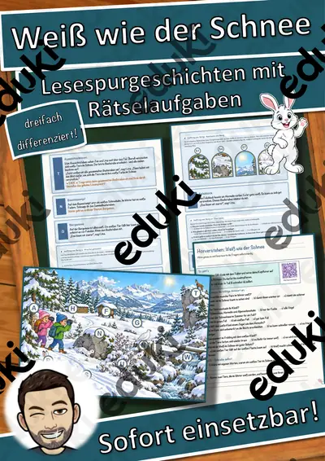
Weiß wie der Schnee – Lesespurgeschichte mit Rätselaufgaben (Klasse 3)

Wenn die Blätter bunt werden – Lesespurgeschichte mit Rätselaufgaben (Klasse 3)

Wenn die Spinnen fliegen – Lesespurgeschichte mit Rätselaufgaben (Klasse 3)

Wenn dir kalt wird – Lesespurgeschichte mit Rätselaufgaben (Klasse 3)

Werden und Vergehen – ein Jahr im Garten von Oma Rosi – Lesespurgeschichte mit Rätselaufgaben (Klasse 3)

Werfen – Schlagball, Weitwurf und Zielwurf – Lesespurgeschichte mit Rätselaufgaben (Klasse 3)

Wolfgang Amadeus Mozart – Lesespurgeschichte mit Rätselaufgaben (Klasse 3)
Lesespurgeschichten in der 3. Klasse
In der dritten Klasse sind die Texte kurz und die Wege übersichtlich. Der Lageplan hilft beim Orientieren, und das Lösungswort macht die Selbstkontrolle auch für Leseanfängerinnen und Leseanfänger möglich.
Jede Geschichte liegt in drei Niveaustufen vor, die sich in Textlänge, Satzbau und Aufgabenanspruch unterscheiden. Weg, Stationen und Lösungswort bleiben gleich, sodass alle Fassungen gleichzeitig in einer Klasse laufen können.
Themen auf dieser Seite
Beispiele aus dieser Sammlung: Das Winterquartier · Weben am Webrahmen · Die Vogelzählung · Das Drachenfest · Volkstanz und Tanzfest · Medien-Detektive unterwegs · Der Kürbishof · Vorräte wie zu Omas Zeiten.